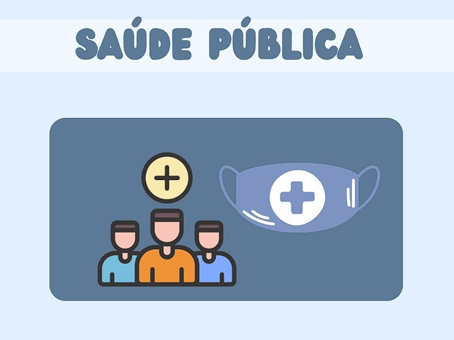

A Importância De Lavar As Mãos

Prevenção de Doenças: Lavar as mãos remove germes e bactérias que podem causar doenças, como gripes, resfriados e infecções.

Lavar as mãos adequadamente é crucial para evitar infecções hospitalares, protegendo pacientes e profissionais da saúde.

Ao manter as mãos limpas, reduzimos a chance de transmitir germes a outras pessoas, protegendo amigos, família e colegas.

O hábito de lavar as mãos ajuda a reduzir surtos de doenças e melhora a saúde coletiva, especialmente em locais públicos.